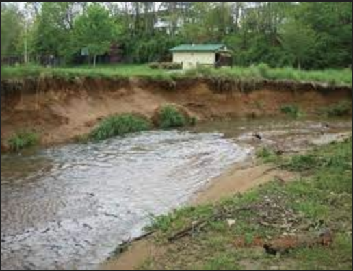
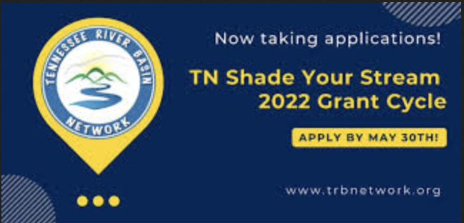
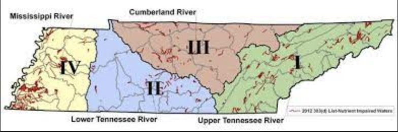
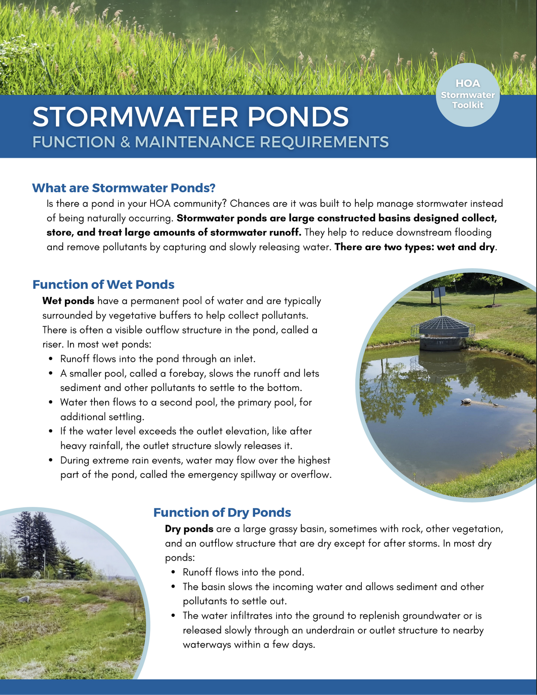
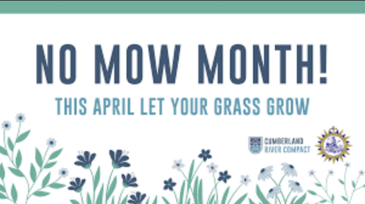

Tier 2: Qualitative Metrics: Programs and Events
Agriculture Sector
Education and Outreach Events:
September 2023
CRN created the Termination and Incorporation of Cover Crops Workshop with 26 attendees.
December 2023
TNC held the Managing Risk through Conservation Field Day with 35 attendees.
Programs: 
The TDA started the Riparian Incentives Program to help get farmers to keep the vegetation by water grown. Click the image to learn more.
The TVA started a program called Shade your Stream to highlight the importance of vegetation around water sources. Click the image to learn more.
Stakeholder Involvement:
Stakeholders can be found on the partners page
Municipal Wastewater Sector
Education and Outreach Events: 
There have been 7 training sessions conducted by TDEC for nutrient optimization. Click the image to learn more.
Programs:
2021-2022
Four plants participated in TNPOP optimization for wastewater.
2023-2024
Three plants joined TNPOP optimization for wastewater.
Stakeholder Involvement:
Stakeholders can be found on the partners page
Urban Stormwater Sector
Education and Outreach Events: 
We have distributed 300 brochures on Stormwater Control Measures for HOAs. Click the image to learn more.
Programs: 
CRC created No Mow Month to help vegetation by water grow, and it had 200 participants. Click the image to learn more.

UTK created the Tennessee Smart Yard program to help educate people on local environments and how to make their yard smart for Tennessee. Click the image to learn more.
Stakeholder Involvement:
Stakeholders can be found on the partners page
Nature-Based Solutions
Education and Outreach Events:
Programs:
Stakeholder Involvement:
Stakeholders can be found on the partners page
General Nutrients
Education and Outreach Events:
Programs:
Stakeholder Involvement:
Stakeholders can be found on the partners page